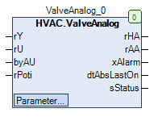

ValveAnalog (FB)¶
FUNCTION_BLOCK ValveAnalog
Kurzbeschreibung¶
Steuerung eines stetigen Ventilantriebs mit BlockierschutzfunktionTypische Anwendung: Regelventil in einem Heizkreis
Darstellung¶

Schnittstellen¶
Eingänge¶
Name Datentyp Wertebereich Initialwert Funktion rY REAL Stellsignal aus Regelung rU REAL 0.0 Positionsrückmeldung vom Regelventil byAU BOOL Rückmeldung - Automatikbetrieb rPoti REAL Rückmeldung - Stellsignal aus Hardware-Handebene
Ausgänge¶
Name Datentyp Wertebereich Initialwert Funktion xHA REAL Stellsignal nach Handübersteuerung rAA REAL Stellsignal vor Handübersteuerung xAlarm BOOL Sammelstörmeldung dtAbsLastOn DATE_AND_TIME Datum / Uhrzeit des letzten Blockierschutzbetriebs sStatus STRING
1: ‘Störung Positionsüberwachung’ 2: ‘Ansteuerung über Automatik’ 2: ‘Ansteuerung über Hand Hardware’ 3: ‘Ansteuerung über Hand Software’
Sollwerte / Parameter¶
Name Datentyp Wertebereich Initialwert Funktion udiControlTime UDINT 0 ... 600s 180s Überwachung der Ventilposition: Meldeverzögerung rControlDiff REAL 7.0% Überwachung der Ventilposition: Maximale Positionsabweichung xControl BOOL TRUE Überwachung der Ventilposition: Freigabe / Sperrung rAbsMaxLimit REAL 100.0 Oberer Grenzwert für das Stellsignal vor Handübersteuerung rAbsMinLimit REAL 0.0 Unterer Grenzwert für das Stellsignal vor Handübersteuerung udiAbsTime UDINT 10s ... 600s 180s Zeitdauer des Blockierschutzbetriebs tAbsStartTime TOD 00:00:00 - 23:59:59 Uhr 08:00:00 Uhr Zeitpunkt des Blockierschutzbetriebs eAbsDay eDoW eDoW.Monday ... eDoW.Sunday eDoW.Monday Wochentag des Blockierschutzbetriebs rManValue REAL 0.0 Handübersteuerung: Handwert eManModeN eMANNUM eMANNUM.Auto, eMANNUM.Man Handübersteuerung: Betriebsart
Funktionsbeschreibung¶
Stellsignal vor Handübersteuerung rAA¶
Das Stellsignal vor Handübersteuerung rAA wird vom Blockierschutzmodul beeinflusst. Das Blockierschutzmodul wird durch die Sollwerte / Parameter
udiAbsTime, tAbsStartTime und eAbsDay parametriert, als Eingangssignal wird die Positionsrückmeldung vom Regelventil rU verwandt.
Die minimale Änderung der Ventilposition zur Sperrung der Blockierschutzfunktion ist auf 10.0% fixiert.
Das Stellsignal vor Handübersteuerung rAA ist durch die beiden absoluten Grenzwerte rAbsMinLimit und rAbsmaxLimit begrenzt.
Die Positionsrückmeldung vom Regelventil rU darf durch das Stellsignal aus Regelung rY ersetzt werden, falls keine Positionsrückmeldung vorhanden ist.
Stellsignal nach Handübersteuerung rHA¶
Das Stellsignal nach Handübersteuerung rHA wird durch den Ausgang des Blockierschutzmoduls, das Stellsignal aus Regelung rY und die Handübersteuerung beeinflusst.
eManModeN Blockierschutzprozess rHA Hinweise eMANNUM.Auto FALSE rY Automatikbetrieb mit passivem Blockierschutzprozess eMANNUM.Auto TRUE Ausgang des Blockierschutzprozesses Automatikbetrieb mit aktivem Blockierschutzprozess eMANNUM.Man X rManValue Handübersteuerung
Legende: X = beliebig
Positionsüberwachung¶
Die Positionsüberwachung kann freigegeben ( xControl = TRUE ) oder gesperrt werden ( xControl = FALSE ).
Bei freigegebener Positionsüberwachung wird permanent der Betrag der Differenz zwischen dem Stellsignal nach Handübersteuerung rHA und der Positionsrückmeldung vom Regelventil rU ermittelt
und mit dem Grenzwert rControlDiff verglichen. Überschreitet diese Differenz permanent während einer Meldeverzögerung udiControlTime den Grenzwert, so wird ein Alarmsignal erzeugt, falls
gleichzeitig die Rückmeldung - Automatikbetrieb byAU den Automatikbetrieb ( byAU = 0 ) signalisiert. Dieses Alarmsignal wird mit höchster Priorität am Ausgang sStatus im Klartext dargestellt
und gleichzeitig zum Ausgang Sammelstörmeldung xAlarm übertragen ( xAlarm = TRUE ). Das Alarmsignal wird wieder deaktiviert ( xAlarm = FALSE ), sobald die Differenz den Grenzwert erstmalig
wieder unterschreitet.
Positionsrückmeldung vom Regelventil rU¶
Die Positionsrückmeldung vom Regelventil rU darf durch das Stellsignal aus Regelung rY ersetzt werden, falls keine Positionsrückmeldung vorhanden ist.
Blockierschutzmodul¶
Das Blockierschutzmodul wird durch das numerische Blockierschutzmodul mit einstellbarer Zeitdauer ( FB: AbsA ) realisiert.
Die Zeitdauer udiAbsTime, der Zeitpunkt todAbsStartTime und der Wochentag eAbsDay sind einstellbar.
Die Mindestlaufzeit zur Sperrung des Blockierschutzbetriebs beträgt 30s.
Der Zeitstempel (Datum / Uhrzeit) des letzten Blockierschutzbetriebs dtAbsLastOn steht zur Verfgung.
Visualisierung¶
Information¶
Element Autoren Datum Version Anmerkungen Funktion Alexander Halter 06.2016 1.0 Ursprungsversion Programmierung Alexander Halter 06.2016 1.0 Ursprungsversion Test Jochen Reu 11.2017 1.0 Ursprungsversion Dokumentation Jochen Reu 11.2017 1.0 Ursprungsversion
Codesys¶
- InOut:
Scope Name Type Initial Comment Input rY REAL Stellsignal z.B. vom PI-Regler rU REAL 0 Rückführung Ventilstellung eAO eManNum HVACTYPES.eManNum.Auto Hand - Schalterposition (A)uto, (O)n rPoti REAL Poti-Stellung der Hardware-Handebene Output rHA REAL Ansteuerung rAA REAL Ansteuerung Regelung xAlarm BOOL Störmeldung über Ventilstellung dtAbsLastOn DT Letzter Start ABS Funktion sStatus STRING Status Meldung Input udiControlTime UDINT 180 Zeit in Sekunden von 10sek - 10min rControlDiff REAL 7 maximal zulässige Abweichung zwischen Soll- und Iststellung in % xControl BOOL TRUE Freigabe Überwachung der Ventilstellung rAbsMaxLimit REAL 100 Oberer Grenzwert für das Stellsignal rAbsMinLimit REAL 0 Unterer Grenzwert für das Stellsignal udiAbsTime UDINT 180 ABS Zeit des Ventils. Zeit in Sekunden von 0sek - 10min todAbsStartTime TOD TIME_OF_DAY#8:0 Uhrzeit zu der der Blockierschutz ausgeführt wird eAbsDay eDoW eDow.Monday Wochentag an dem der Blockierschutz ausgeführt wird rManValue REAL 0 HandWert eManModeN eMANNUM eMANNUM.Auto 0=Automatikbetrieb 1= Handbetrieb